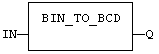
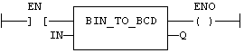

Function
Converts a binary value to a BCD (Binary Coded Decimal) value.
|
Name |
Type |
Description |
|
IN |
DINT |
Integer value |
|
Name |
Type |
Description |
|
Q |
DINT |
Value converted to BCD or 0 if IN is less than 0 |
|
IN |
Q |
|
-2 |
0 (invalid) |
|
0 |
0 |
|
10 |
16 (16#10) |
|
22 |
34 (16#34) |
The input must be positive. In LD language, the operation is executed only if the input rung (EN) is TRUE. The output rung (ENO) keeps the same value as the input rung. In IL, the input must be loaded in the current result before calling the function.
Q := BIN_TO_BCD (IN);

The function is executed only if EN is TRUE.
ENO keeps the same value as EN.
